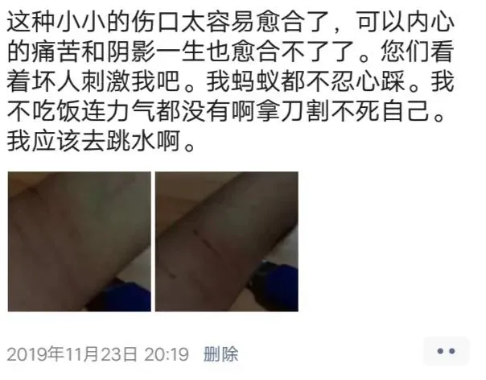
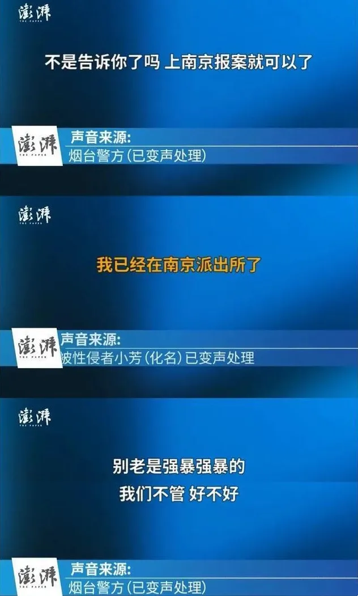
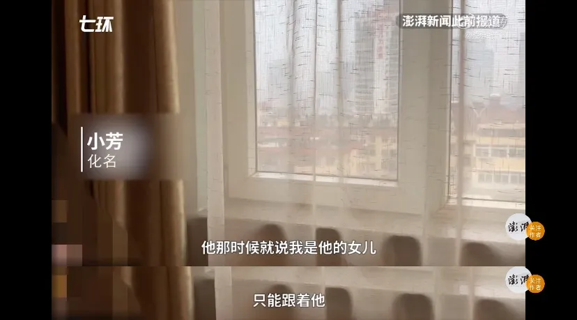

不一定要拼死反抗，才能证明这是强奸
李莹律师长期关注未成年人性侵案，她同时是北京市源众家庭与社区发展服务中心主任。2019年，曾为女孩李星星提供过多方帮助，接触事实时间较长，也始终对此案保持关注。同时，因为她代理过许多女性（包括未成年人）遭受性侵的案件，具有丰富的实践经验。
对于鲍某明涉嫌性侵未成年女性李星星一案，李莹律师有独到的观察。4月11日上午9点，南风窗记者采访了李莹律师。
很多人帮过她
南风窗：李律师您好。2016年在北京的时候，李星星报过一次案，当时您是否也给她提供了帮助？就您所知，当时是个什么情况？
李莹：帮助她的不止我一个人，还有其他律师，心理咨询师，甚至一些相关部门，都做过努力。在北京报案的时候她没有找我们，我们主要是在2019年给她提供了一些医疗救助。她自杀的时候，我们同事也很着急。当时没办法赶到烟台去，就找了当地的亲戚赶紧过去，一大早就去。
我们当时也很担心，幸好最后被人救起来了，她这次跳海，我们是知道的。所以当时我感觉这件事情给她带来的精神伤害还是挺严重的。她要去住院，她有重度抑郁焦虑，再不住院问题会更大，所以我们主要是通过紧急救助金给她支持了一些医疗费用。

南风窗：您说的这次自杀，是发生在什么时间？
李莹：就是2019年6月份那次，你们的报道里有提到，也是最后的一次。我们当时特别担心，但又联系不上她，联系到她母亲，赶紧去找她。后来有人把她救上来了，我们也联系上了。就我所知，还是有人在帮助她的，包括南京也有。
南风窗：你们和李星星之前是怎么联系上的？
李莹：是她找我们的。一直是有人在帮助她的，他们也知道我们机构一直在做妇女儿童权益的保护，也做了一些未成年性侵的案件。帮她的人，大家也做一些沟通。大家都在一个圈子，各自用力帮助她。这个事情很复杂，她的心理压力很大，我们还是先劝她去住院。
南风窗：那么除了医疗救助，你们是否还提供了一些法律上的帮助？
李莹：我本人也是律师，法律帮助肯定有的。因为涉及未成年人，有的东西我也不好说得那么细。我只能说大家都在做一些努力，做一些工作。你也看到的，其实整个的推进比较难。

南风窗：确实比较难推动案件的进展，就你们的感觉来说，难点主要在哪？
李莹：主要难点就是所谓的强奸的证据不足。当时她过来找我们的时候，还没有第二次立案，是撤案那一次。考虑到未成年人的性情，里面还是有一些特殊性，很难按照一般的强奸案件来推进。我们认为她这个事情是存在的，也做了一些努力，但没有达到预期效果。
为什么说“证据不足”？
南风窗：她提供证据，一直说不足，究竟不足在哪里？
李莹：我们没有作为她的代理律师去介入，没办法看到案卷。
我个人分析，一是她满14周岁了，这个年龄点很重要。14周岁以前，无论是否自愿，发生性关系，肯定是强奸罪，但满了14周岁就有一个是否是自愿的问题。这个很难举证，正如你们的报道里说的，鲍某明写保证书，“给我现在的女儿，未来的妻子”。二是是不是有一些不利于她的证据，具体情况我不清楚。
我前面说了，对未成年人的性侵有它的特点，这个案子更特殊。她刚满14岁就被送养，一直在北京，后面又到山东，一直是被鲍某所控制的。所以对她来讲，她其实是在类似于孤岛这样的一个孤立无援的封闭的环境。
而且她也很小，就十几岁，其实还是未成年人，那么对她来讲，在这样的一种环境下，她其实是有可能会被洗脑，这一点你们的报道也有提到。如果她是被控制的，那就很难说她有什么样的能力去说愿意或者不愿意，或者去选择。
还有一个，我们从过去的很多性侵案件当中发现，在我们这种传统文化、男权性别文化之下，未成年人被性侵以后，很多的时候会有自责，也有羞辱感。我们之前办过几个案子，都呈现这种特点，比如有一个女孩，她被性侵了以后，她就得让自己去爱上对方，因为只有爱上对方，她才能够为自己这个行为找到合理性。
南风窗：您是分析，还是说自己代理过的一个女孩？
李莹：我说的是代理的案子，她是这样一个情况，就此做的分析。
其实这个女孩同样也是。警方可能获得一些不利于这个孩子的证据，无非就是可能并没有明显的反抗，他们之间是不是有所谓的亲密关系。我说的是可能，因为警方也没有公布具体的案情。我想说的是，即使是有这种不利的证据，警方也要进行甄别和考量。
正如前面说的，第一，女孩是在一种相对封闭、孤立无援的环境之下，其实对她来讲是非常可怜的，她没有任何帮助，所以她只能依仗他。
第二，她会被这个人洗脑，一个生活经历丰富的人和一个未成年女孩，洗脑不是一个难的事情。
第三，性侵案件的受害人会有一种自责、内疚，一方面是羞辱，一方面自责、内疚，所以有的当事人她就要为自己这种心态寻找一个合理化的途径，告诉自己，我是爱上他了。这其实不是真的爱上，而是她的一种自洽行为，或者是一种心理上的自我保护。

我代理那个案子就是这样，非常热烈的爱，后来她跟我说，李律师，我自己都无法理解我当时为什么会那样。她会主动去示爱。所以我担心，鲍某明可能也有类似这样的证据，证明性关系是基于情感的。但我认为这样的证据并不能说明性行为符合女孩的意愿。发生性行为，并不难证明，难的是证明是否违背她的意志，我认为是违背她的意志的。
不是不能判定，而是要综合判定
南风窗：李律师，你们介入帮助她的时候，她在实施自杀，双方矛盾彻底爆发了，这个时候，还能说她为了心理自洽仍然爱对方吗？
李莹：不好说，自杀是不是代表彼此一定没有相互纠缠？警方也不好说，就我了解，事情远比我们想象的复杂。
复杂就在于他们两者之间关系的判断。谈了这么多，我一直认为彼此关系其实是表面的东西，我刚才分析的就是它背后的东西。要理解，她处在特殊环境、控制关系之下，孤立无援，一些行为她自己都不能解释，我也给你举过另一个女孩的例子。
我紧接着想说，其实我认为即使鲍某能够提供不利于这个孩子的证据，但我认为还是违背她的意志。她多次报警，如果是她愿意的话，她为什么要报警？然后她有很严重的抑郁，多次自杀。其实这种严重的抑郁、焦虑、自杀行为都是创伤应激的明显反应，如果没有创伤，她怎么会有这些反应？如果是她自愿的话，至少她应该是快乐的，而不是这样的一种痛苦的反应。所以我想说警方在判断这些东西的时候，一定要进行综合的考量。不是说男方拿了一个不利于孩子的证据，就没有办法判定，而是要综合判定。
前几年我们办宋山木强奸女下属那个案子，受害者当时也是在一个密闭的环境，她也没有明显的反抗。已故的著名民法学家杨大文教授当时就提到，他说温柔的反抗也是反抗，我们没有办法拿这种贞节牌坊去要求现代的女子，一定要求她拼死反抗，才表示违背自己的意志。
法院最后判强奸罪成立，第一，她确实是没有很明显的反抗，但考虑了当时的密闭环境，她是孤立无援的。第二，她之前跟他没有情感纠葛。第三，她对这个事实表现出厌恶，马上把那些衣服扔了，去告诉同事，告诉男友，很难过，哭了。第四，她第二天报警。她也是通过这些条件来说明这个事情是违背她的意志的。
我们不能简单地说，非要胁迫她，打她，暴力对待她，才算违背意志。
（李星星为化名）
作者 | 南风窗高级记者 向由
编辑 | 李少威
排版 | 阿丽菜
南风窗新媒体出品
原网址: 访问
转载请注明来源，欢迎对文章中的引用来源进行考证，欢迎指出任何有错误或不够清晰的表达。可以在下面评论区评论，也可以邮件至 memo_hanabi@outlook.com
文章标题:不一定要拼死反抗，才能证明这是强奸
文章字数:2.5k
本文作者:南风窗
发布时间:2020-04-12, 20:13:19
最后更新:2020-04-23, 16:32:59
原始链接:https://mmspace.now.sh/you-dont-have-to-fight-to-prove-it-is-rape/版权声明: "署名-非商用-相同方式共享 4.0" 转载请保留原文链接及作者。